CareOS · Product experience
Requirements and screens
The 11 Notion product requirements, with the latest prototype screens underneath each one.
Captured 2 October 2026. Screens show the current prototype; descriptions explain the intended experience. Tap any image to open it.
Today · Appointments and Round
1. Know who I am seeing today
See relevant care for today and open the right encounter. Include active EHR and manually created care; a patient profile alone does not appear here.
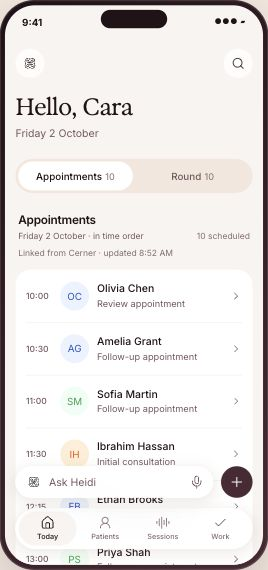
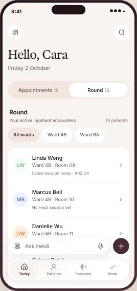
Patients · Add patient
2. Find or create a patient independently of a visit
Find current and historical patients, browse alphabetically and create a lasting profile before recording. Keep identifying details and information sources clear.
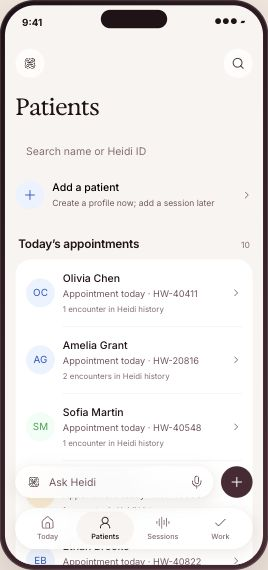
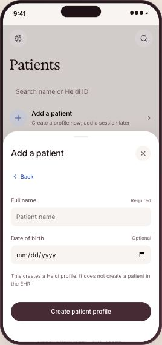
Patient profile
3. Maintain useful context about my patient
View and update identity, history, medications, allergies and concise clinician-curated context. Keep these details easy to reach without crowding the page.
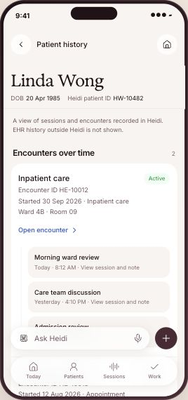
Persistent detail editing and curated context are still to be added to this screen.
Patient → Encounter → Session
4. Understand each period of care
Keep care periods distinct, including appointments with one session. Show the nature of care, type, dates, status and verification IDs compactly, with sessions as the main encounter content.
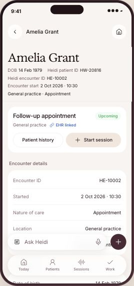
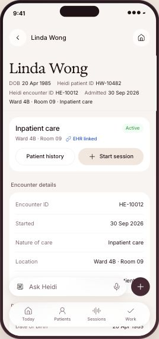
Scribe · Ad hoc or in context
5. Start capturing without administrative setup
Start in one action, with a familiar recording control. Carry patient and encounter context when available, allow ad hoc capture, and start another session without replacing existing notes.
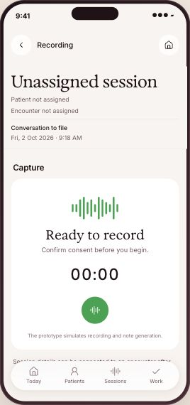
Sessions · Patient and encounter assignment
6. Organize or correct a session later
Find an ad hoc session and give it the right patient and encounter later. Assigning a patient must create or select an encounter; existing sessions and notes remain intact.
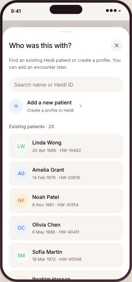
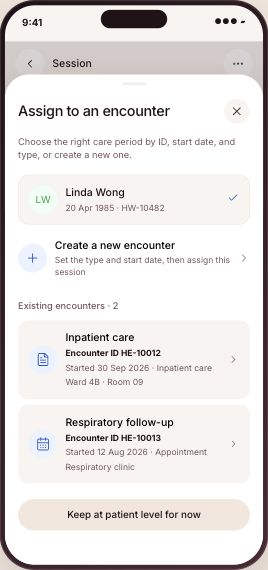
The current “Keep at patient level” option conflicts with this requirement and needs to be removed.
Sessions · Session and note
7. Return to what I captured
Find a session and read or work on its note first. Keep verification context visible and compact; distinguish documents, transcript and dictation. First-release document capabilities remain open.
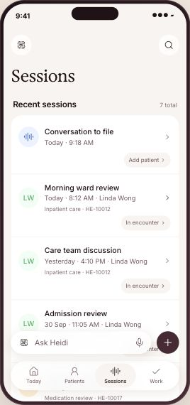
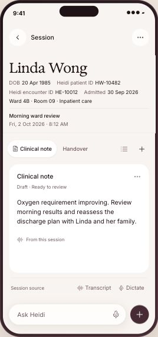
Patient profile · Retained context
8. Keep important patient details beyond a session
Save important details independently of session content. Showing a session in patient history must not imply that its content is permanently retained.
The prototype does not demonstrate independent retention. Current policy and the content covered still need confirmation.
Suggestions · Create task
9. Decide which suggested actions become my work
Review suggested actions and accept those worth adding to Work. Acceptance adds a task; it does not start execution. Also allow general tasks with optional care context.
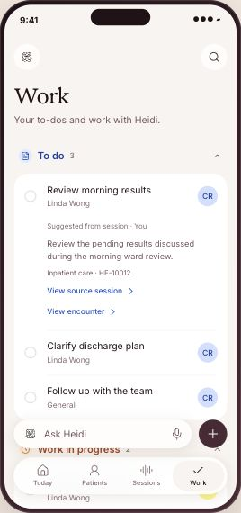
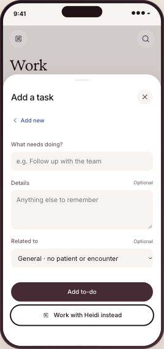
The task screens are shown here; a separate suggestion acceptance step is still missing.
Work · Inline task details
10. Track and complete work
See To do, Work in progress and Done with clear ownership. Inspect context, complete or reopen personal tasks, and request supported Heidi execution separately.
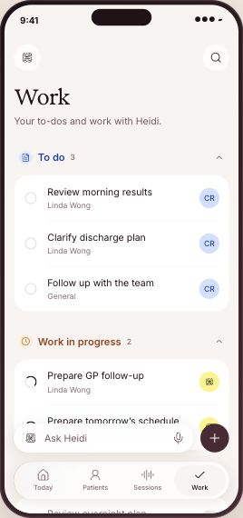
Ask Heidi
11. Ask Heidi for help across my work
Find information or initiate supported work across patients, encounters, sessions and tasks. Current-screen context helps without limiting the request. Return to Work to track requests.
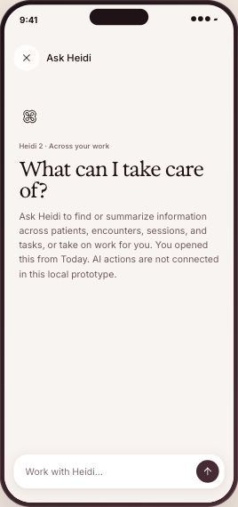
Agent execution and broader automation illustrate the wider direction; they are not connected in this prototype.
Product decisions still open
Search scope, first-release document capabilities, retention, task context, encounter lifecycle and later EHR association remain open in the PRD. EHR note delivery is outside this design pass.